DEP / ARR · ALL AIRPORTS · WORLDWIDE
The World Clock Built for Aviation
Track local time, UTC/Zulu, live weather, and airport status for any airport on Earth, beautifully and at a glance.
Track local time, UTC/Zulu, live weather, and airport status for any airport on Earth, beautifully and at a glance.
Real screenshots from the App Store listing. Swipe through, or pick your device.
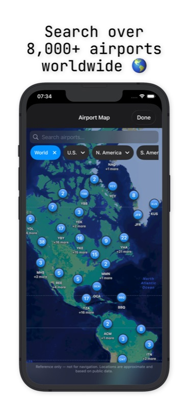
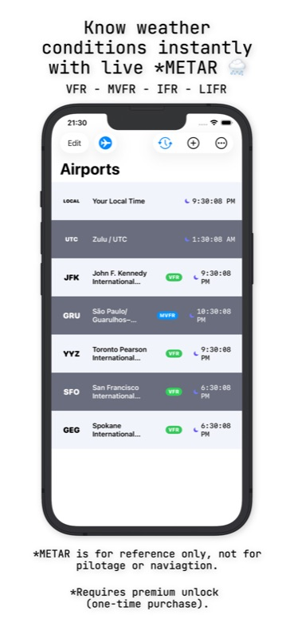
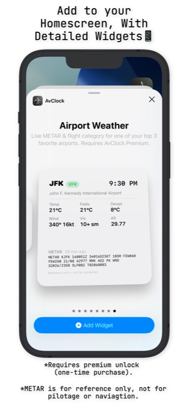
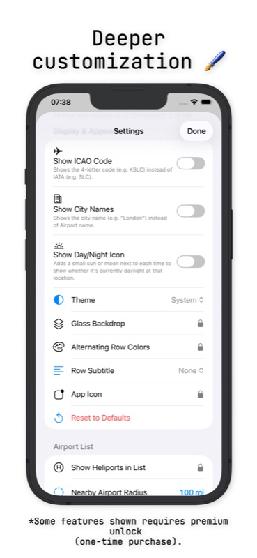
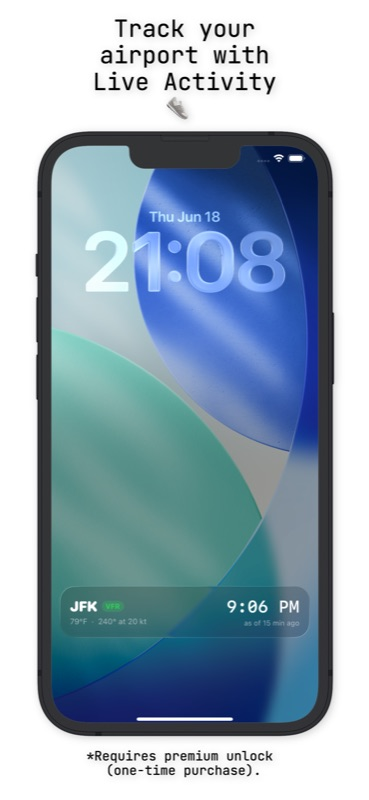
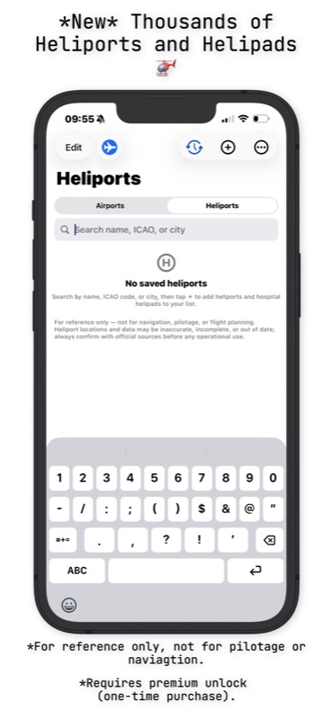
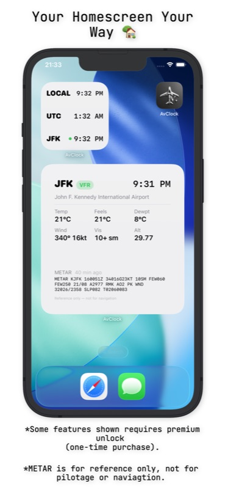
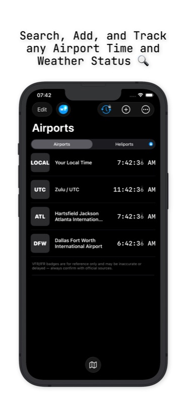
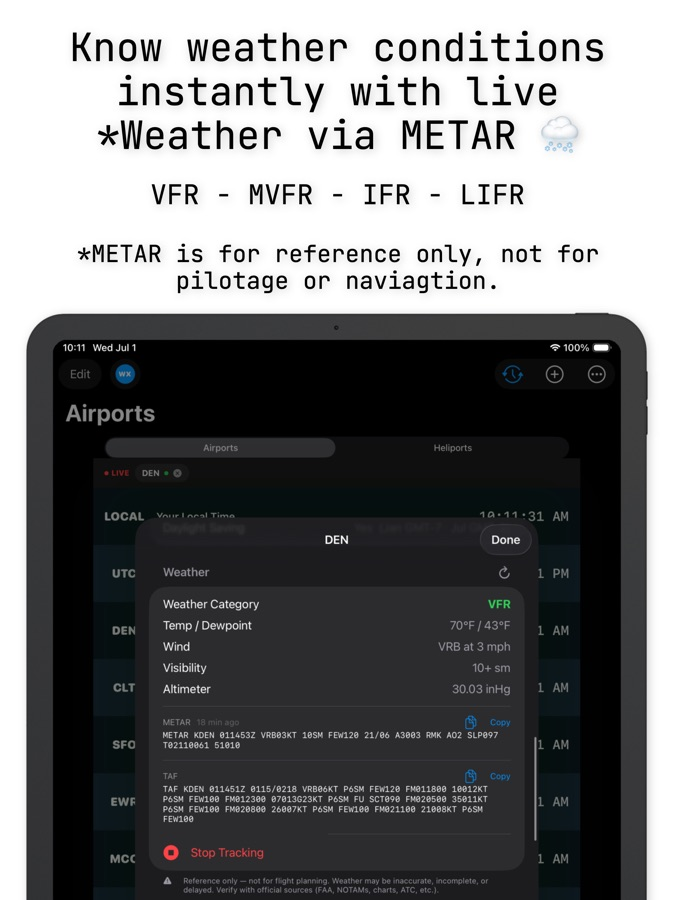
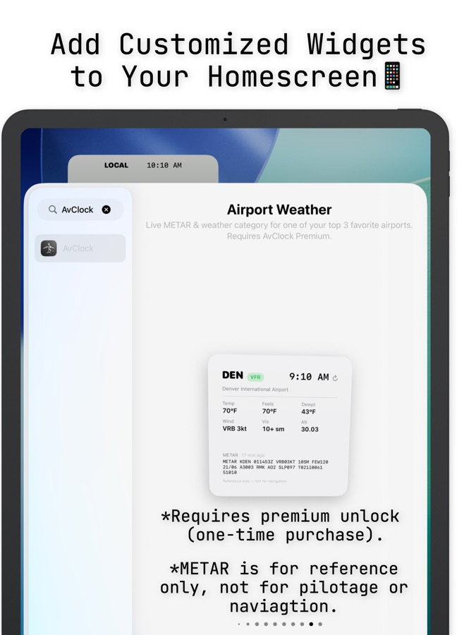
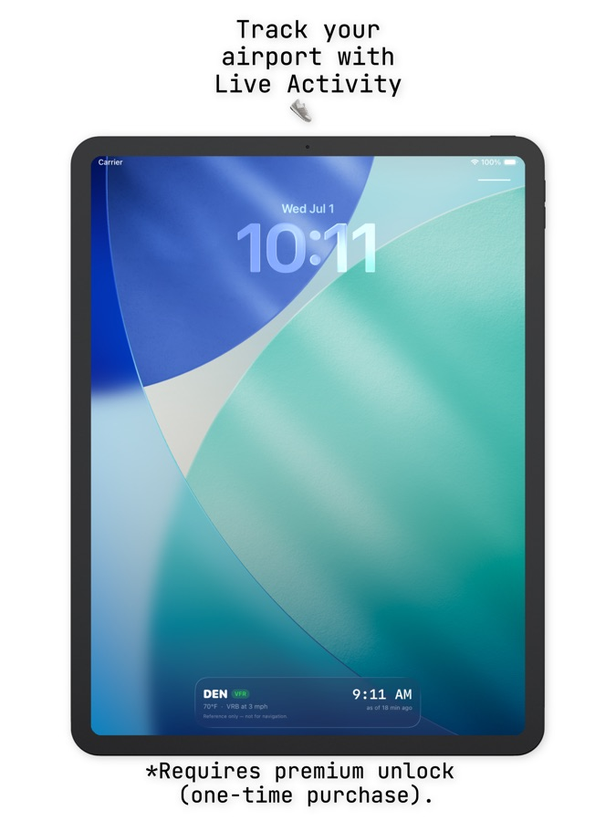
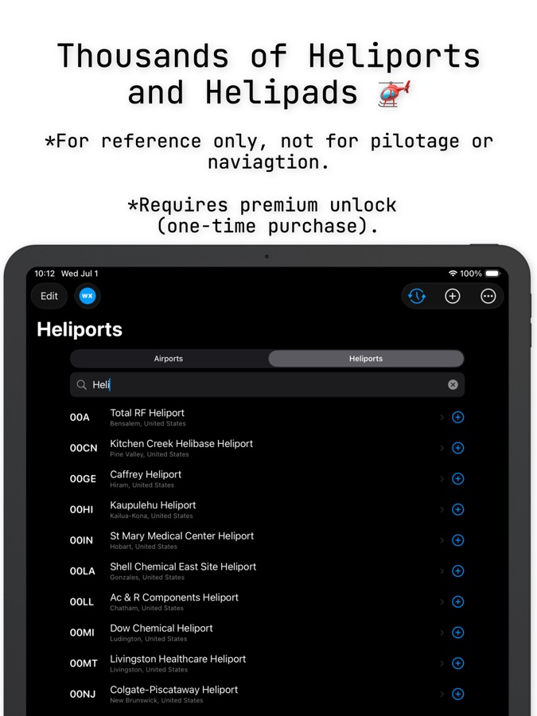
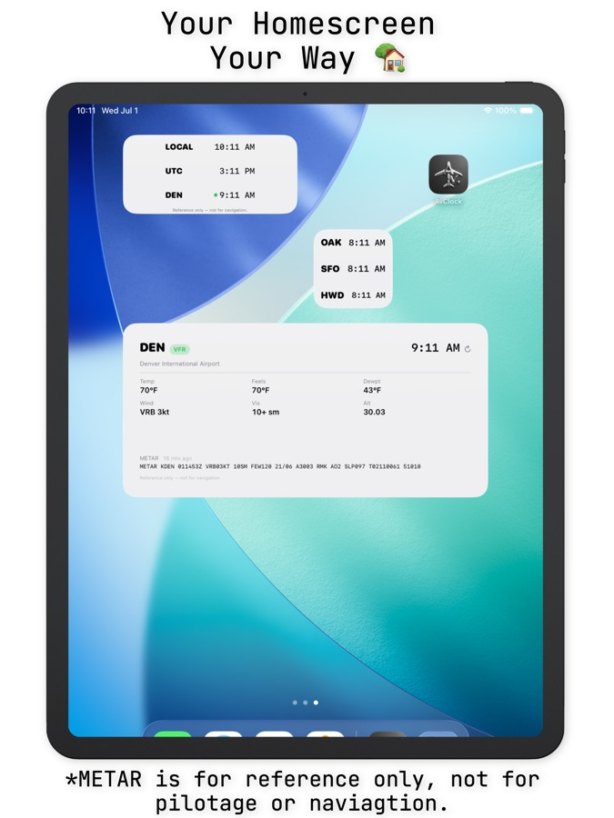
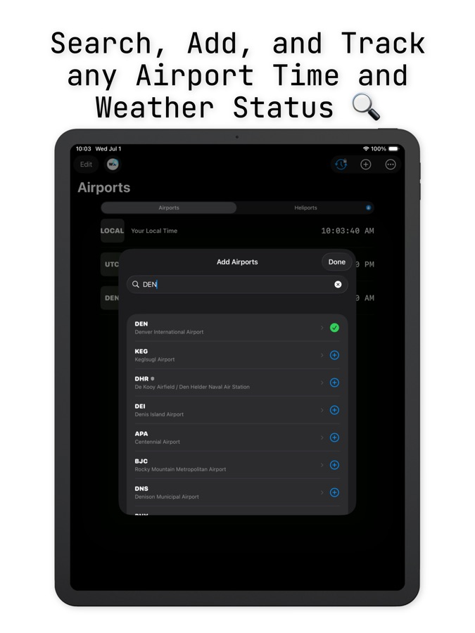
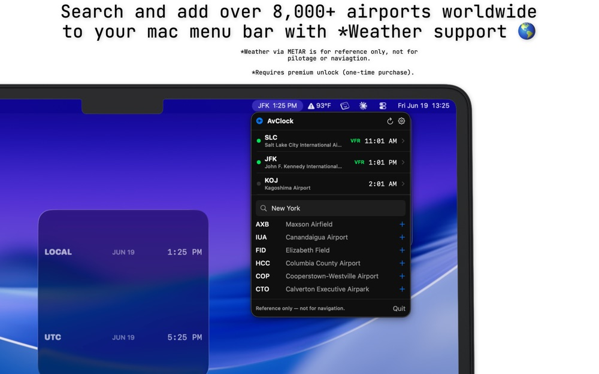
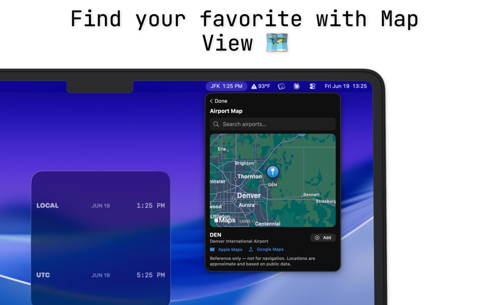
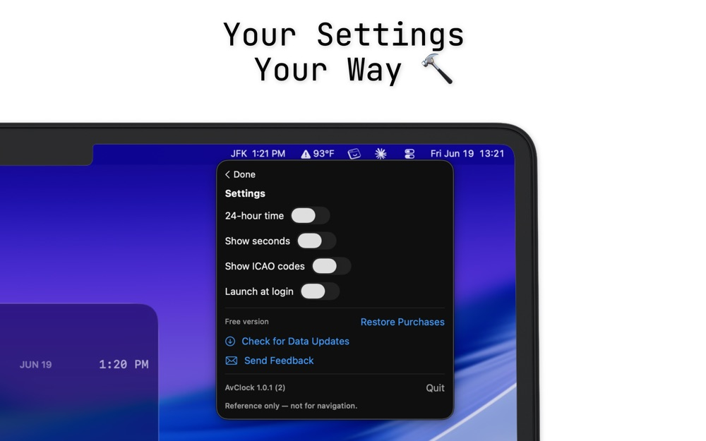
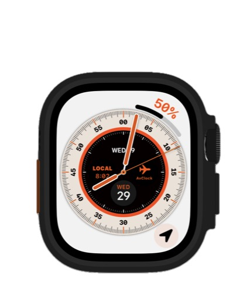
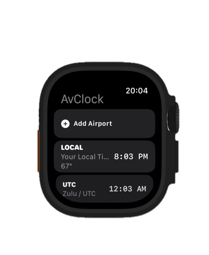
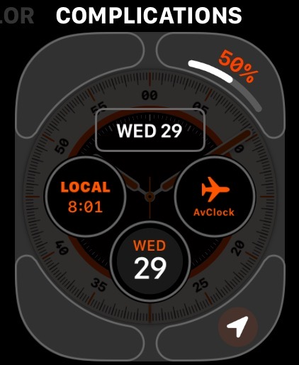
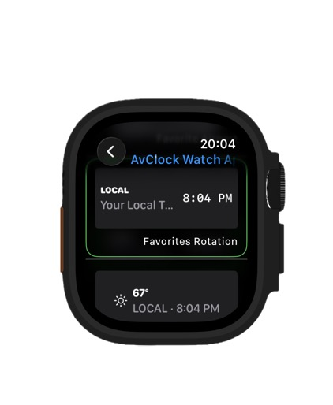
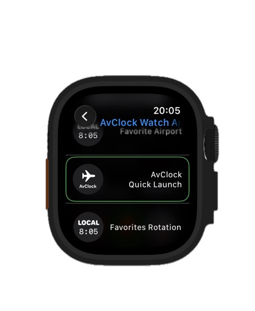
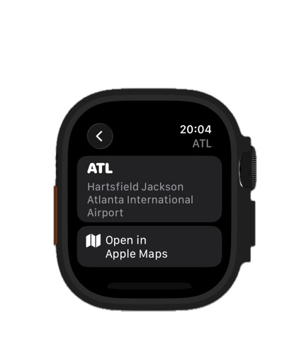
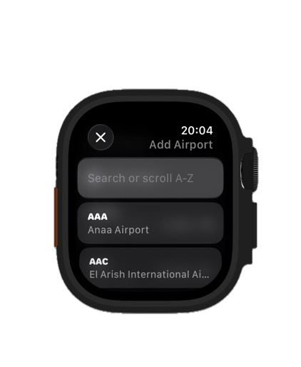
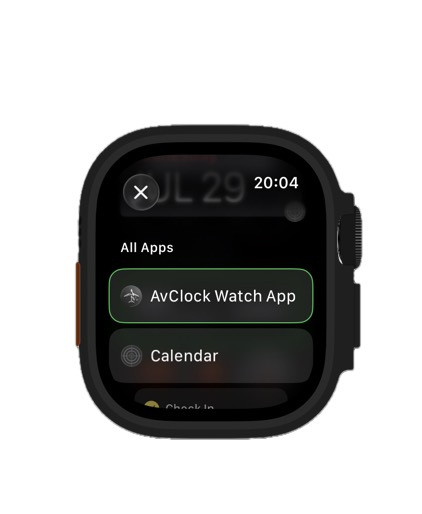
Scroll to see more →
Every timezone converter treats the world the same: cities, not airports. AvClock was built differently from day one: real ICAO/IATA codes, real aviation weather, real FAA status, because "what time is it in London" and "what time is it at Heathrow, and is it VFR right now" are genuinely different questions. Read the full story on the blog →
A live look at how AvClock thinks: real local time in real time zones, and every airport on Earth is one tap away.
A complete airport world clock, with no account, no ads, no data collection, ever.
AvGeeks and aviation enthusiasts who need real METAR/TAF, not a toy weather icon.
Anyone who's ever needed to know the time, the weather, and the currency at their connection, all at once, without three separate apps.
Yes, the core app is completely free, with no ads and no account required. A one-time Premium unlock adds live aviation weather, FAA status alerts, My Flights, and more.
No. Premium is a single one-time purchase. No recurring charges, ever.
No, AvClock is a reference and informational tool only. Always use official sources (FAA, NOTAMs, charts, ATC) for navigation or flight planning.
Your location is used only to find nearby airports, entirely on your device. It's never transmitted or stored anywhere.
Yes, a Universal Purchase unlocks Premium on iPhone, iPad, and Mac.